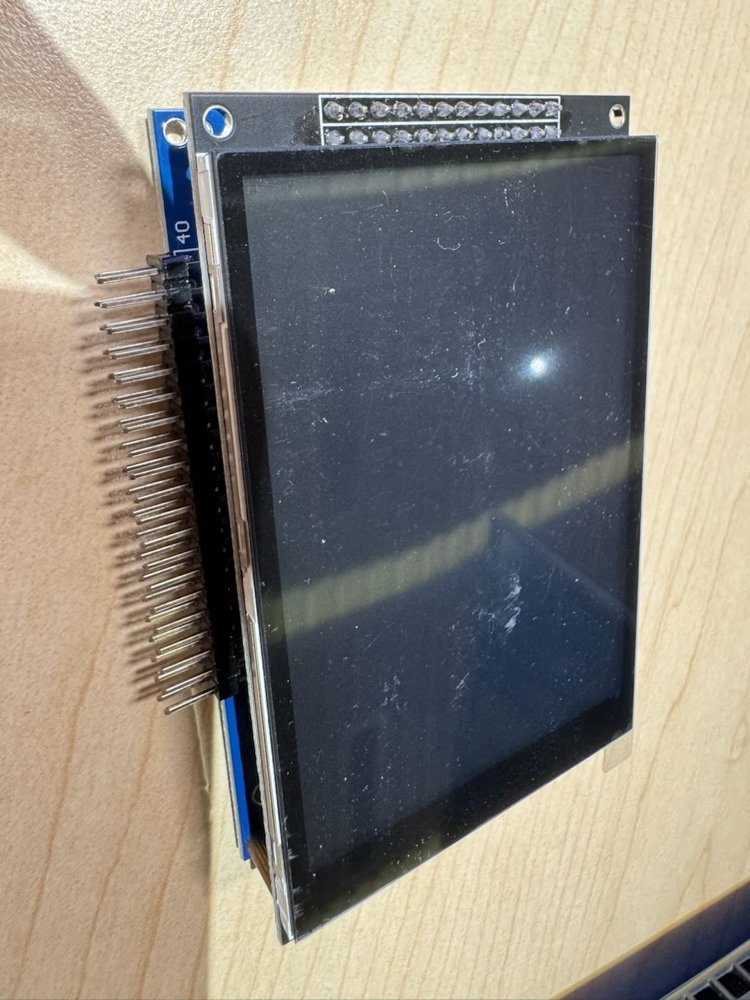
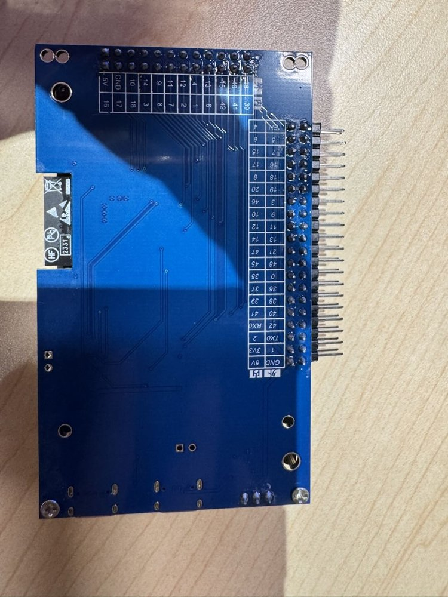

01项目简介· 2026 苏客松 · AI+生活办公 × PandaAI 赛道
招财机器人
招财机器人
摆在工位上的熊猫：问它行情，它查 PandaAI 告诉你；
行情有异动，它转过头来叫你。
上班时间就是 A 股交易时间。看一眼行情要切窗口、开 App，弹窗又多到没人看。我们把行情放进一个不用操作的桌面小机器人里：开口问，抬眼看。
一次真实的问答（11-01 凌晨，语音实测）
你说
“宁德时代今天涨了吗”
→
听懂
0.8 秒
→
查 PandaAI
1.2 秒
→
它的反应
点头 + 答案卡 + 开口说
5,223
只 A 股都能问
21
个行业板块
305
个 PandaAI 数据接口
±20°
点头、转头的舵机

实物 · 3D 打印外壳
PandaAI 数据 · 不构成投资建议01 / 05
02硬件· 拆开看看
招财机器人
一块 ESP32-S3，一块屏，两个舵机



结构爆炸图：3D 打印外壳 · 零螺丝（卡、插、粘）· 两轴云台
| 部件 | 型号 | 做什么 |
|---|---|---|
| 主控 | ESP32-S3 N16R8（16 MB Flash · 8 MB PSRAM） | 联网、画屏、动作 |
| 屏幕 | 3.5″ 480×320 · ST7796 + GT911 触摸 | 熊猫脸、答案卡 |
| 舵机 ×2 | 飞特 STS3215 总线舵机 | 点头 ±20° · 转头 ±10° |
| 麦克风 | INMP441 数字麦 | 边说边传到云端 |
| 喇叭 | MAX98357A 功放 + 1 W 喇叭 | 边收边放回答 |
| 网络 | Wi-Fi 直连腾讯云（WSS） | 不需要电脑 |
屏幕上的招财熊猫：脸跟着舵机一起动
待机
眨眼、四处看
偶尔笑一下
在听
紫色眼睛
嘴变成声波
想一想
冒思考泡泡
显示听到的话
点头时笑
眼睛弯起来
张嘴、耳朵抖
舵机只在开机摆动的范围里动：接线不会被扯到02 / 05
05团队
招财机器人
两个人，软件、硬件、数据都自己做

石璞
前谷歌员工，15 年工作经验，精通软硬件开发，连续创业者。

Darin Hall（杜汉文）
美国留学生，在上海交大读书；凯斯西储大学数据科学本科，全栈工程师。
11 月 1 日凌晨（服务器日志）
02:00
中枢搬上腾讯云，机器人不再依赖电脑
02:56
第一次语音问答成功：“帮我看看中芯国际”
03:33
接入 PandaAI MCP，能自由提问
04:04
21 个行业板块
04:52
招财熊猫的脸上机，跟着舵机动
谢谢
招财机器人 · 2026 苏客松05 / 05